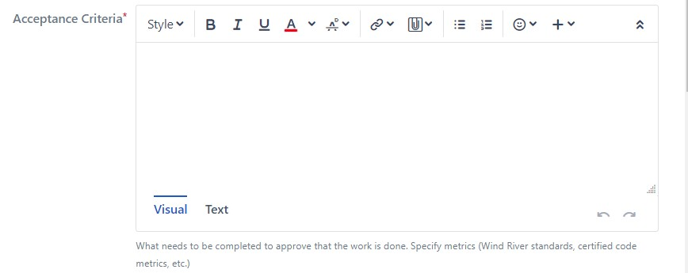
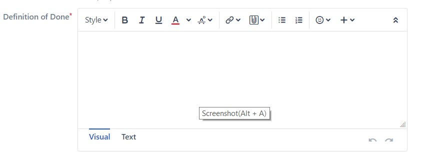
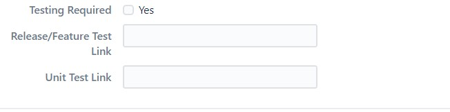

Definition of Done for Stories¶
Overview¶
An important concept that impacts the success of an Agile Project is having a common understanding and agreement throughout the team on the release’s Definition of Done
Stories that have not met the “DONE” criteria go back into the Product Backlog and their ranking is reviewed as part of backlog grooming and sprint planning.
Story complexity is defined by a point system, when a Story is Accepted the project gets credit for the points associated with that Story.
The Product Owner/Technical Feature Owner or a designee accepts the Stories.
Definition of Done¶
The acceptance of Story is contingent on the following criteria being met.
HLD document updated and reviewed
Only required if the story is about HLD drafting
Coding done
Code inspection done
Involve Technical Feature Owner/Domain Lead/Technical lead, Design peers and Product Architects as the reviewer
Involve scrum testers as observer
All reviewers have approved code review in the Code Collaborator
Ensure zero Coverity issues, zero compiler warnings for story that deliver code
Provide Coverity and build logs evidence by running existing check script
Story specific tests are written and executed for test required Story that delivery code
Test cases should be automated and delivered to release testing team
Story test case coverage = 100%, pass rate > 90%
Test result is entered in the Test Management/Reporting System (LTAF)
Provide test logs
Readme of document delivered incrementally
UT cases delivered if applicable with expected coverage (optional, applicable to new feature US only):
C coverage: line coverage = 100%; conditional coverage >80%.
Java coverage: TBD ??
No P1 defects, no P2 blocking defects
Document updates done refer to Doc as Code Guideline
Code checked in
If the feature under development is for current SR release, a pull request against current SR release branch should be opened and merged
If the feature under development is for future SR release, codes should be checked in to the feature branch for future integration. This is due to the “partial feature” check-in policy is not clear at this point, before full CI model is implemented
Known high priority (P1, P2) defects associated with this Story have been fixed, rest moved to the defect backlog
IP declaration reviewed and changes declared, if applicable
Export declaration reviewed and changes declared, if applicable
Acceptance Criteria¶
Besides story “Definition of Done”, a story specific “Acceptance Criteria” must be provided for each story. “Acceptance Criteria” are story specific requirements that must be met for the story to be completed. They are a technique for adding functional detail to stories.
For Test Required Story, ATDD test case list is needed. Such cases should be ready after Sprint Grooming, at least after Sprint Planning.
Acceptance Criteria need to be updated in Jira field:

Tracking DoD for Stories¶
To help accept a story to be complete, we use the “Definition of Done” field in the Jira for Continuous Integration pipeline (e.g., Jenkins) link or other necessary informa°on except test related artifacts..

For test related artifacts, dedicated Jira fields are uses: - “Release/Feature Test Link” field to input the LTAF link on ERPT - “Unit Test Link” field to input the UT test cases link for this Story - “Testing Required” field is used to tell whether Tests are needed. For team following ATDD guidelines, ATDD cases need to be included in the test list:

Each of the listed items must be provided when accepting a Story.
Recommended format for Jenkins pipeline parameters are:
HLD link: ??
Code review link: http://codereview.wrs.com/ui#review:id=XXXXX
LTAF link: Using ERPT “Quick Link” (http://pek-lpgtest3.wrs.com/ltaf/erpt.php)
UT link Example: http://stash.wrs.com/projects/VX7/repos/vxworks/browse/vxworks-7/pkgs/os/arch/ppc/uTest/<test_case>
Definition of Blocked¶
What does blocked mean:
You are blocked by something external to the team (i.e. you need hardware, or you need hardware fixed.)
You are stuck and need help
There is a defect blocking progress on your task
Blocked should not be used if you are just waiting for other tasks in the story to finish. Blocked is something you want to escalate because you need help.
Always set the Blocked Reason when you set blocked so it is obvious why you marked something as blocked.
Change Log¶
Date |
Change Request ID |
Version |
Change By |
Description |
05/21/2020 |
N/A |
0.1 |
Shree Vidya Jayaraman |
Transferred content from Vx7 User Story Definition of Done Jive page |
06/26/2020 |
N/A |
0.2 |
Shree Vidya Jayaraman |
Updates based on the updated content in Vx7 User Story Definition of Done Jive page |
06/29/2020 |
N/A |
0.3 |
Shree Vidya Jayaraman |
Updates based on Rodger’s feedback |